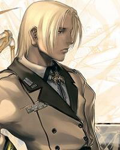

Forums galactiques > Taverne galactique : lieu de discussion informel > musée des poèmes
| Oromïs Nagaarïl Réputation à la taverne : 13  08/02 ETU 13:24 | Score : 3 Détails Homme tu es loin d'être sage
Tu construis ta vie sur des mirages Construisant chaque jour ta propre cage Augmentant chaque jour ton esclavage Tu te crois très grand, très important Mais ta seule valeur morale est celle de l'argent Ta terre meurt sous l'asphyxie monétaire Et les paradis terrestres se transforment en enfer Au lieu du poing gauche tu tend le bras droit Et shoote dans la main qui se tend devant toi Mais un beau jour la vérité éclatera Et petit homme tout petit, plus petit Que la plus petite des petites fourmis Derrière tes yeux avides, tu comprendras Que le plus petit des hommes est un homme Que le plus grand des homme est un homme Que jusqu'au tout dernier des derniers sommes L'homme ne sera qu'un homme | ||
| faust VIII Réputation à la taverne : 218  09/02 ETU 19:26 | Score : 2 Détails
Aime moi Aime moi Aime moi Prends moi dans tes bras Aime moi Aime moi Avec passion avec douceur Aime moi Aime moi Je veux sentir cette chaleur Aime moi Aime moi Sois là avec moi Aime moi Aime moi Nan, je crois que ce temps est révolu Baise moi Baise moi C’est beaucoup plus inattendu | ||
| Horohoro Réputation à la taverne : 1130  09/02 ETU 19:37 | Score : 1 Détails Ce livre enfin le tien nul trait ne le décore
aucune image à tous les yeux ne le trahit D'être sans nom et sans visage lui suffit et dans son chant silent ma propre voix s'ignore Qu'importe ainsi écrit avec les mots des autres à ma façon qui est la tienne je les dis et seuls toi et moi l'auront compris que tendrement unit le souci des jours nôtres. | ||
| faust VIII Réputation à la taverne : 218 10/02 ETU 13:21 | Score : 0 Détails Un Homme ...
Il ne faut pas grand chose pour faire un être humain, quelques kilos de viande, quelques litres de sang, une pompe et des tuyaux, des trucs et des machins, une âme et une conscience, même pour les plus méchants. Il ne faut pas grand chose pour faire un être humain, carbone et oxygène, hydrogène et azote, malgré ce qu'on prétend, ça n'a rien de divin, ce sont les éléments qui constituent la crotte ! Il ne faut pas grand chose pour faire un être humain, quelques gouttes de feu de deux corps qui se donnent, mais le plus difficile, est heureux qui parvient à trouver toutes ces choses qui en feront un Homme | ||
| Horohoro Réputation à la taverne : 1130 13/02 ETU 00:23 | Score : 4 Détails mes pieds se sont blessés au fil de chaque pierre
du chemin qui n'allait nulle part sous mon pas en vain j'aurai porté la croix du quotidien humain calvaire qu'importent désormais les saisons sans pavois Printemps,Eté,Automne,Hiver l'abîme suspendu sur notre heure plénière? Tout s'efface sans un mot,sans une voix pour laisser place à nos âmes solitaires des couleurs et des mots du décor d'autrefois? Voici luire déjà l'éternelle lumière. Mes yeux n'ont retenu ni le ciel ni la plage ni la plaine où sont ancrés comme au repos les blancs villages ni les chemins qui vont au loin du paysage ni les fleurs ni les fruits le sons et les images. Il ne me reste que ce corps dépourvu que ces mains vides,que ces yeux dépouillés de tout ce qu'ils ont vu Nos regards encore une fois s'entrecroiseront en vain nous referons alors la terre et la mer et le ciel pour pouvoir être nous-mêmes enfin du reflet de nos rêves éternels. | ||
| faust VIII Réputation à la taverne : 218 14/02 ETU 23:07 | Score : 1 Détails Le Mirage
Un très court instant, l'homme se vit trançandant, de ses sens les éléments devenant Dieux Ô tout puissant..... Il se nourrit d'un rêve qui devenant sa sève fit naître l'illusion d'être l'unique et le seul maître... Ecrasant et méprisant l'amour comme un tyran il tue jour après jour ses semblables comme toujours... Quand le mirage passé elle viendra s'imposer la mort son chatiment rira t'en l'emportant.... | ||
| Horohoro Réputation à la taverne : 1130 22/02 ETU 15:52 | Score : 1 Détails Fais un souhait,
pour quelle personne te fais-tu tant de mal ? Le rêve n'est qu'éphémère. Je ferme les yeux, En cette mer où le safran fleurit, La tempête de sable devient une montagne. Sans fin,même plus qu'un désert. Terre à travers le temps. Du bonheur à la tristesse en un instant, Je prends en moi le pouvoir, Chauffant mes joues ! Le futur est dans ces mains, Un faucon s'envole. Tu dois croire en ton rêve,dans ta folle course. Un ciel pur qui fait trembler les ténèbres. Traverse le Sahara,le soleil te guidera ! | ||
| G.D.I Réputation à la taverne : 85  22/02 ETU 19:25 | Score : 2 Détails Requiem pour moi-même
Allez graver mon nom dans la pierre Qu'on donne les derniers coups de pelles Je m'en retourne à la poussière Les anges et les démons m'appellent Je n'aurais pas laissé de plumes De sang sur un champ de bataille Je n'ai fait que hurler à la lune Sans y décrocher de médaille Mes ennemis, mes amitiés d'une voix S'accordent à dire que les meilleurs partent en premier Gardez vos larmes pour en rire Ainsi soit-il Ce n'est qu'un au revoir mes frères On se retrouvera bientôt dans les abîmes ou la lumière La vie parfaite qu'aujourd'hui l'on me prête Ce parcours sans faute et sans faille Mérite dignement qu'on me regrette Et que l'on fête mes funérailles Mes croyances ne furent pas de celles Qu'on cloître dans les chapelles L'encens qui brûlait dans ma chambre Masquait trop de sexe et de chanvre Couché à l'étroit dans ma boîte devant ce défilé navrant Drapé de velours écarlate, m'aime t'on mieux mort que vivant ? Pardonnez-moi, regrettez-moi, c'est le requiem pour moi-même | ||
| Boulix Réputation à la taverne : 56  04/03 ETU 21:13 | Score : 0 Détails Up
| ||
| Quaideluz Réputation à la taverne : 411  04/03 ETU 22:10 | Score : 6 Détails Boulix, boulix, boulix
Un chien qui en vaut six Boulix, boulix, boulix Un aboiement dans la galaxie Boulix, boulix, boulix il a le sens du sacrifice Boulix, Boulix, Boulix Il défendra la justice Boulix, Boulix, Boulix les étoiles veullent sur lui Boulix, Boulix, Boulix Croquant les méchants par dix Boulix, Boulix, Boulix Comme une idée fixe Boulix, Boulix, Boulix | ||
| Leia la sanguinaire Réputation à la taverne : 46  26/03 ETU 17:54 | Score : 4 Détails Un nuage passe,
c' était un nuage de notes. Un oiseau passe, c' était un oiseau de musique. Une âme passe, c' était une âme allegreto. Un homme passe, c' était un chef d' orchestre. Une femme passe, c' était une joueuse de piano. Une partition cela reste, même le temps ne peut l' effaçer Pourvu que l' écrivain y mette de sa plume. | ||
| Général_Louis Réputation à la taverne : 1323  26/03 ETU 19:07 | Score : 2 Détails Petit Poème d'une Pensée
Le temps passe et pourtant se ressemble trop Le train-train quotidient de nos vies nous poursuit Inlassablement sans nous laisser de répit Que l'on soit commandant ou balayeur Nos vies sont souvent notre grand malheur Alors ce qui est à la fin est bonheur. Général_Louis | ||
| Blade II Réputation à la taverne : 3  26/03 ETU 19:15 | Score : 3 Détails
Poéme écrit par Blade pour les commandantes d'Espérance. ******************Sentiments****************** Quand je t'ai vu pour la première fois, Je n'étais pas attiré vers toi, Mais depuis pas mal de temps, Tu occupes mes pensées à chaque moment. Quand vas-tu en paix me laisser? Afin de ne plus me troubler. Tu es si méchant d'occuper mes pensées, Que j'ai beaucoup de mal à te pardonner. J'espère fort en notre chance, Que nous serons en cadence. Et que nous serons enfin réunis, Et que jamais cela ne sera fini. Alors nous verrons dans quelques temps, Si nous sommes âmes soeur. Alors nous saurons dans un moment, Où sera notre coeur. | ||
| Saint-Rhadamante Réputation à la taverne : 43  26/03 ETU 21:10 | Score : 2 Détails Un éclat de rire éphémère
S'est évanouie dans l'atmosphère D'autres le rejoignent sans tarder Car il est temps de s'amuser Quelle sensation de bien être Quand de moi je ne suis plus maître Mon rire m'entraîne vers la folie Je n'en peux plus, mon corps se plie Dans un état de pur démence Dans mon cerveau les idées dansent, Je ne peux plus me contrôler Impossible de m'arrêter Mes paupières clignent et mes yeux pleurent Quelques gouttelettes de bonheur, Je n'en peux plus, je m'asphyxie Ouf ! Ce fou-rire s'achève ici ! HRP// Petite dédicace à la Team Réville, la plupart des moments comme ça se passent en leur compagnie... //HRP | ||
| Elysio Réputation à la taverne : 11 23/05 ETU 15:44 | Score : 2 Détails Il est grand,il est beau,C'est le roi de la radio!
Il court dans les bois,les bosquets et les forêts Tout le monde l'acclame lorsqu'il arrive au château C'est le plus valeureux,adoré de tous les gueux! Oyez oyez bonnes gens,accourez vite au château! Oyez oyez bonnes gens,pour le roi de la radio! Que résonnent trompettes,il faut annoncer la fête! Et de tous les comtés,tout le monde est invité! Oyez oyez bonnes gens,accourez vite au château! Oyez oyez bonnes gens,pour le roi de la radio! Oyez oyez bonnes gens,accourez vite au château! Oyez oyez bonnes gens,pour le roi de la radio! C'est le numéro 1,chez les trolls et les catins Il découpe les barbares,il mange la tête des canards Son sang est royal,ses paroles sont un régal Reprenons tous ensemble,gloire au roi de la radio! Oyez oyez bonnes gens,accourez vite au château! Oyez oyez bonnes gens,pour le roi de la radio! Oyez oyez bonnes gens,accourez vite au château! Oyez oyez bonnes gens,pour le roi de la radio! Ménéstrels,troubadours,chantez du haut de la tour Qu'on prépare le gibier,qu'on chauffe les pois fricassés En ce jour rien n'est trop beau,pour le roi de la radio Levez tous vos bedaines,et maintenant reprenez! Oyez oyez bonnes gens,accourez vite au château! Oyez oyez bonnes gens,pour le roi de la radio! Oyez oyez bonnes gens,accourez vite au château! Oyez oyez bonnes gens,pour le roi de la radio! Oyez oyez bonnes gens,accourez vite au château! Oyez oyez bonnes gens,pour le roi de la radio! Oyez oyez bonnes gens,accourez vite au château! Oyez oyez bonnes gens,pour le roi de la radio! Bah oui c'est tout! | ||
| thediamant Réputation à la taverne : 52  23/05 ETU 16:26 | Score : -4 Détails Si vous êtes mes amis ...à moi
Va falloir voter ...pour moi ...dent, j'veux être président thediamant président Oui président ...dent ...dent thediamant président J'payerai plus mes impôts Et je ferai l'con avec des meufs dans la safrane ...frane ...frane J'veux passer au JT d'Jean-Pierre Pernault Et faire la bise à Claire Chazal ...zal ...zal Ohhhh oui président ...dent, j'veux être président thediamant président Oui président et pour longtemps Ça c'est évident Je veux des purs costards Les vannes pourries d'Bouvard Les dents de Joey Starr J'veux rouler en Lada Une moche une Samara Qui broute et qui avance pas Alors... Alors voter pour moi Voter thediamant Au palais d'l'Elysée j'vais tout casser Tout transformer pour faire la bringue bringue bringue Dans mon bureau j'mettrais l'chauffage à donf Pour que les filles enlèvent leurs fringues fringues fringues J'peux tout faire J'serai président ...dent J'veux être président thediamant président Oui président et pour longtemps Oui parce qu'avec moi il y aura plus de quinquennat, Il y aura plus de septennat, Il y aura le "trentennat", Je suis élu pour trente ans, On fait tout péter, J'suis même élu à vie, Avec moi j'vais exploser l'Elysée, On en fait une gigantesque piste de danse, Vous serez invité tout les samedis soirs, Avec moi la pollution c'est pas propre, Le chômage j'suis contre Et l'insécurité c'est pas gentil Alors, alors, alors... Si j'étais toi, j'voterai pour moi Il veut être président ...dent Il veut être président thediamant président Oui président et pour longtemps thediamant président Alors pourquoi tu voterais pas pour moi. | ||
| Dame Yuna Réputation à la taverne : 405  23/05 ETU 16:32 | Score : 0 Détails HRP:Reprise d'une reprise ...
Pas la peine de reprendre les remixe de Cauet car bocoup de gens les connaisse ... HRP:Edite: si tu veut moinser TheDiamant moinse ... Et je connais pas Arthure donc je peut pas dire que c'est une reprise mai Cauet qui ne le connait pas ??.. Et redit moi chute et ces toi qui risque de plus pouvoir parler !(ces dur de parler sans ses dents ^^) | ||
| thediamant Réputation à la taverne : 52 23/05 ETU 16:34 | Score : 0 Détails le commandant au dessus de moi a reprit une chanson d'artur mais la vous ne dite rien alors chufffft
| ||
| C-741 Réputation à la taverne : 62  23/05 ETU 16:49  | Score : 1 Détails Si on dit rien c'est sûrement parcequ'il est plus intelligent que toi...
| ||
| thediamant Réputation à la taverne : 52 23/05 ETU 16:51 | Score : 1 Détails je pourai savoir pourquoi vous dite cela commandant lui on lui dit rien alors qu'il reprent une chanson et moi on m'engulle mais plus rien ne va dans la galaxie
|
Forums galactiques > Taverne galactique : lieu de discussion informel > musée des poèmes